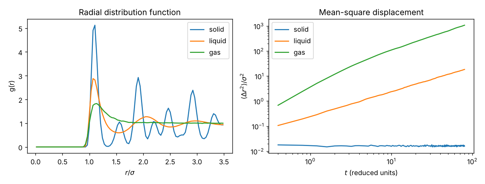
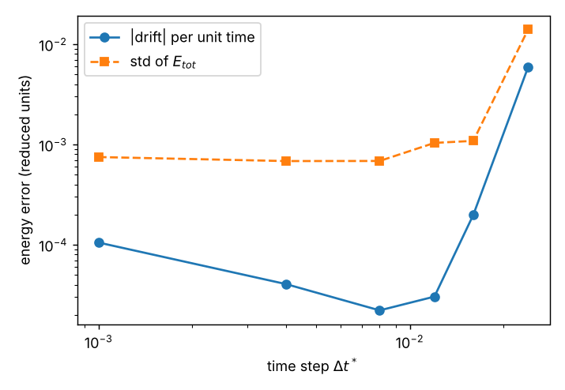
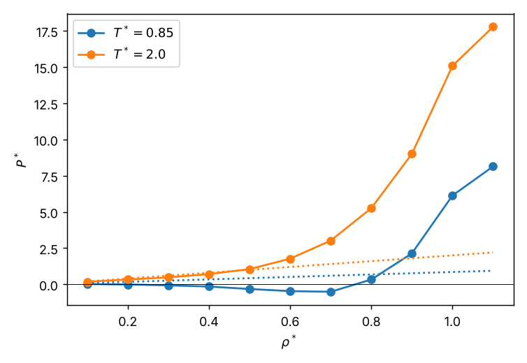
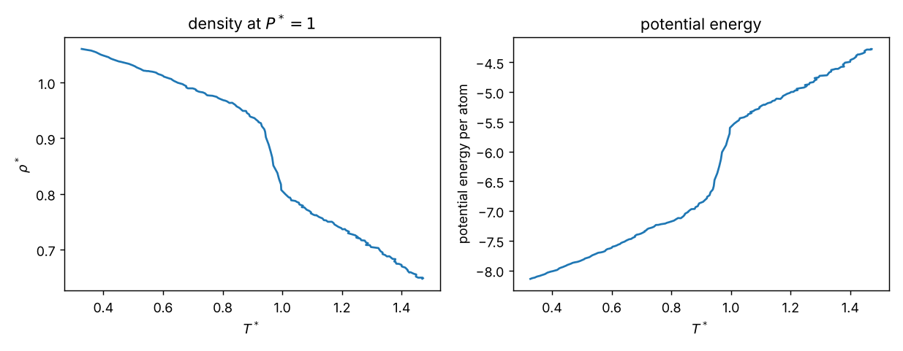

Curriculum/Computational labsLAB 502
Lab: Molecular dynamics of liquid argon with LAMMPS
This is a hands-on lab. You will install the open-source molecular dynamics code LAMMPS, write a complete input file for liquid argon, run it, check that the run is trustworthy, and measure the structure and the diffusion coefficient from the trajectory. You will then change the conditions (temperature, density, pressure) to make a solid, a liquid and a gas, and watch a crystal melt. Every command, every input file and every number on this page was run on the machine that built this site, so you can reproduce it line by line.
- Reading time
- about 35 min
- Leads to
- LAB 503: LAMMPS: copper
- Level
- Graduate: simulation methods
- Install LAMMPS in several ways and run an input file serially, in parallel and from Python.
- Write a LAMMPS input file from scratch and explain what each command does.
- Read the thermodynamic output and check energy conservation, temperature and pressure.
- Compute the radial distribution function, coordination number and diffusion coefficient.
- Change the thermodynamic conditions (state point, NVT, NPT) and recognise solid, liquid and gas.
- Test the numerical settings, convert reduced units to real units and diagnose typical errors.
Each numbered step is a lesson with commands to type and output to compare with. Type the files yourself the first time rather than only downloading them; then use the download links to check. At the end of the page there are exercises with worked solutions. All files are in the labs/lab-502 folder of the repository.
Step 1. Install LAMMPS and check that it runs#
LAMMPS (Large-scale Atomic/Molecular Massively Parallel Simulator, from Sandia National Laboratories) is free, open source (GPL) software. It is a single executable, usually called lmp, that reads a text input file. Pick one of these ways to get it:
| Method | Command | Good for |
|---|---|---|
| pip in a virtual environment (tested for this page) | python -m venv lmpenvsource lmpenv/bin/activatepip install lammps mpich numpy matplotlibexport LD_LIBRARY_PATH="$VIRTUAL_ENV/lib" | quickest on Linux; gives both the lmp executable and the Python module, with the standard packages and the potential files |
| conda | conda create -n lmp -c conda-forge lammpsconda activate lmp | any platform, easy updates |
| Ubuntu/Debian | sudo apt install lammps | system-wide install, often an older version |
| macOS (Homebrew) | brew install lammps | Mac laptops |
| Windows | use WSL2 (Ubuntu) and the apt route, or the installers on lammps.org | Windows laptops |
| From source | git clone -b stable https://github.com/lammps/lammps.git, then CMake (cmake -D PKG_MANYBODY=yes ../cmake) | clusters, GPU builds, optional packages |
The lines marked tested were run for this page; the other routes are the standard documented ones and may differ slightly with your system. After installing, check the version and the installed packages:
lmp -h | head -3Large-scale Atomic/Molecular Massively Parallel Simulator - 22 Jul 2025 - Update 4
Git info (HEAD / stable_22Jul2025_update4)If the shell says lmp: command not found, the program is not on your PATH (in the pip route, activate the environment); some distributions call it lmp_serial or lmp_mpi. Packages add features (for example MANYBODY for the embedded-atom method used in the copper lab); list the ones you have with lmp -h (the section “Installed packages”).
Three ways to run an input file. Create a folder for the lab, put the input file in it and run from that folder, because output files are written to the working directory:
mkdir lab502 && cd lab502
lmp -in in.lj_liquid # serial
mpiexec -np 4 lmp -in in.lj_liquid # 4 MPI processes (MPI build only)
lmp -in in.lj_liquid -var T 1.5 # override a variable defined with "index"
lmp -in in.lj_liquid -log none -screen none # write nothing to screen or log (for batch jobs)From Python (used on this page for the parameter scans) the same input file is run by lammps().file(...); save this as run_lammps.py. It also lets you pass variables:
import sys
from lammps import lammps
infile, extra = sys.argv[1], sys.argv[2:]
args = ["-log", "log." + infile.replace("in.", ""), "-screen", "none"]
for k, v in zip(extra[::2], extra[1::2]):
args += ["-var", k, v]
lmp = lammps(cmdargs=args)
lmp.file(infile)
lmp.close()Step 2. Units and the physical system#
Argon is the standard test system because its atoms are neutral, spherical and interact through a simple pair potential, the Lennard–Jones (LJ) potential $U(r)=4\varepsilon[(\sigma/r)^{12}-(\sigma/r)^6]$ (PHYS 101, Lecture 3), with $\varepsilon/k_\mathrm B=119.8$ K and $\sigma=3.405$ Å for argon. Simulations of LJ matter are done in reduced units: every quantity is expressed with $\sigma$ as the unit of length, $\varepsilon$ as the unit of energy and the atomic mass $m$ as the unit of mass. LAMMPS selects this with units lj. The advantage is that one simulation describes all noble gases: only the conversion changes.
| Quantity | Reduced symbol | Unit for argon |
|---|---|---|
| length | $r^*=r/\sigma$ | $\sigma=3.405$ Å |
| energy | $E^*=E/\varepsilon$ | $\varepsilon=1.654\times10^{-21}$ J $=10.32$ meV $=0.2381$ kcal/mol |
| temperature | $T^*=k_\mathrm BT/\varepsilon$ | $\varepsilon/k_\mathrm B=119.8$ K |
| time | $t^*=t/\tau$, $\tau=\sigma\sqrt{m/\varepsilon}$ | $\tau=2.156$ ps |
| density | $\rho^*=N\sigma^3/V$ | $m/\sigma^3=1.681$ g/cm$^3$ |
| pressure | $P^*=P\sigma^3/\varepsilon$ | $\varepsilon/\sigma^3=41.9$ MPa $=413$ atm |
So the textbook state point $T^*=0.85$, $\rho^*=0.8442$ is argon at 101.8 K with a density of 1.42 g/cm$^3$, a dense liquid close to the triple point. Run convert.py (in the lab folder) to get these numbers for any state point. A typical time step of $\Delta t^*=0.004$ is $8.6$ fs.
LAMMPS does not know that $0.85$ is a temperature: it interprets every number according to the units command. In units lj a time step of $8$ would be $8\tau=17$ ps and the system would blow up at once; in units real the same number means $8$ fs. Always write down the unit system, the time step in physical units and the box size in nanometres before you press run.
Step 3. The input file, line by line#
A LAMMPS input is a text file of commands executed in order; # starts a comment. Create in.lj_liquid:
# Lennard-Jones liquid in reduced units (sigma = epsilon = mass = k_B = 1)
# Run: lmp -in in.lj_liquid (add -var T 0.5 -var rho 1.05 to change the state point)
variable T index 0.85 # reduced temperature kT/epsilon (override: lmp -var T 1.2 -in in.lj_liquid)
variable rho index 0.8442 # reduced number density N sigma^3/V (override: -var rho 0.3)
variable seed index 12345
units lj
atom_style atomic
boundary p p p
lattice fcc ${rho} # fcc lattice with the requested density
region box block 0 6 0 6 0 6 # 6 x 6 x 6 cubic unit cells
create_box 1 box
create_atoms 1 box # 4 atoms per cell -> 864 atoms
mass 1 1.0
pair_style lj/cut 2.5 # truncate at r_c = 2.5 sigma
pair_coeff 1 1 1.0 1.0 2.5 # epsilon sigma cutoff
neighbor 0.3 bin
neigh_modify every 1 delay 0 check yes
comm_modify cutoff 3.8 # ghost-atom range must exceed the RDF cutoff (3.5) plus the skin (0.3)
velocity all create ${T} ${seed} dist gaussian
timestep 0.004
# ---- stage 1: equilibrate at fixed temperature (NVT, Nose-Hoover) ----
fix nvt all nvt temp ${T} ${T} 0.4
thermo 500
thermo_style custom step temp pe ke etotal press vol
run 5000
unfix nvt
# ---- stage 2: production run at constant energy (NVE) ----
reset_timestep 0
fix nve all nve
compute rdf all rdf 100 cutoff 3.5
compute msd all msd
fix rdfavg all ave/time 100 50 5000 c_rdf[*] file rdf.dat mode vector
fix msdout all print 100 "$(step) $(c_msd[4])" file msd.dat screen no title "# step msd"
thermo 1000
thermo_style custom step temp pe ke etotal press
run 20000Read it in blocks. Nothing here is magic; every line answers one of the five questions of an MD simulation.
| Command(s) | What it does and why |
|---|---|
variable T index 0.85 | Defines a variable that is substituted wherever ${T} appears. The style index lets you override it from the command line with -var T 1.2; the style equal does not. Parameters at the top of the file make scans easy. |
units lj | Reduced units (Step 2). |
atom_style atomic | Each atom has only a position, velocity and type (no charge, no bonds): right for argon and metals. |
boundary p p p | Periodic in all three directions: the box is repeated forever, so there are no surfaces (MSE 201). |
lattice fcc ${rho} | Defines an fcc crystal. In lj units the number is the reduced density, from which LAMMPS computes the cube edge (here $a=(4/\rho^*)^{1/3}=1.6796\sigma$, printed in the log as “Lattice spacing”). |
region box block 0 6 0 6 0 6, create_box, create_atoms | A box of $6\times6\times6$ lattice cells, then one atom type (1) is placed on the lattice: $4\times216=864$ atoms. Starting from a crystal, even for a liquid, avoids overlapping atoms; it melts during equilibration. |
mass 1 1.0 | The mass of type 1 (the unit of mass). |
pair_style lj/cut 2.5, pair_coeff 1 1 1.0 1.0 2.5 | The force law. The potential is cut at $r_c=2.5\sigma$ to save time; the arguments of pair_coeff are the types (1 1), then $\varepsilon$, $\sigma$ and the cutoff. |
neighbor 0.3 bin, neigh_modify ... | A list of the atoms within $r_c+0.3\sigma$ of each atom is rebuilt only when an atom has moved half the skin. This is a pure speed-up and does not change the physics. |
comm_modify cutoff 3.8 | Makes the periodic ghost atoms reach far enough for the RDF compute (3.5 plus the skin 0.3). Without it LAMMPS stops with an error that you will meet in Step 11. |
velocity all create ${T} ${seed} dist gaussian | Random velocities with a Gaussian distribution at temperature $T$ (and zero total momentum). A different seed gives an independent run. |
timestep 0.004 | $\Delta t^*=0.004$ (8.6 fs for argon). |
fix nvt all nvt temp ${T} ${T} 0.4 | Nosé–Hoover thermostat: keeps the average kinetic energy at the target temperature. The last number is the damping time (here $0.4\tau$, about $100$ steps): smaller is a stiffer thermostat. Stage 1 equilibrates the melted crystal. |
thermo 500, thermo_style custom ... | Print step, temperature, potential, kinetic and total energy, pressure and volume every 500 steps. |
unfix nvt, fix nve all nve | Stage 2 switches the thermostat off: pure Newtonian dynamics at constant energy (the “microcanonical” NVE ensemble). A properly integrated NVE run conserves the total energy, which is the best test of the integrator. |
compute rdf, fix ave/time | Computes $g(r)$ with 100 bins out to $3.5\sigma$ and averages it over blocks of 5000 steps, writing rdf.dat. |
compute msd, fix print | Computes the mean-square displacement of all atoms from their positions at the start of the stage and writes it every 100 steps to msd.dat. |
run 5000, run 20000 | Advance the simulation: 5000 steps ($20\tau$) of equilibration and 20000 steps ($80\tau$) of production. |
Step 4. Run it and read the output#
lmp -in in.lj_liquidThe run takes about 14 seconds for the 25 000 steps on one core. The screen output (also in log.lammps) has three parts. First, the set-up report; check that it matches what you meant:
Lattice spacing in x,y,z = 1.6795962 1.6795962 1.6795962
Created orthogonal box = (0 0 0) to (10.077577 10.077577 10.077577)
Created 864 atoms
Neighbor list info ...
master list distance cutoff = 2.8
ghost atom cutoff = 3.8$10.0776\ \sigma$ is $6\times1.6796$; $864/10.0776^3=0.8442$, the density you asked for. Second, the thermodynamic output, the heartbeat of the run. Stage 1 (NVT):
Step Temp PotEng KinEng TotEng Press Volume
0 0.85 -6.7733681 1.2735243 -5.4998437 -5.5185778 1023.4542
500 0.83331987 -5.7280165 1.2485331 -4.4794834 0.42185948 1023.4542
1000 0.84350249 -5.5460535 1.2637893 -4.2822642 1.4419202 1023.4542
2000 0.84574766 -5.5018548 1.2671532 -4.2347016 1.6926423 1023.4542
5000 0.81327901 -5.5145201 1.2185066 -4.2960136 1.5274168 1023.4542 Read it like a physicist. At step 0 the atoms sit on perfect lattice sites, so the potential energy is very low ($-6.77\varepsilon$ per atom) and the pressure is strongly negative ($-5.5$): the crystal is at the wrong density for itself. Within a few hundred steps the crystal melts (the kinetic energy of the heat bath is converted into potential energy: $-6.77\to-5.5$) and the pressure rises to a steady $\approx1.5$. The volume never changes because the box is fixed in NVT. Equilibrium means that the averages stop drifting; here, after about 1000 steps (4$\tau$). Stage 2 (NVE) is the test of the integrator:
Step Temp PotEng KinEng TotEng Press
0 0.81327901 -5.5145201 1.2185066 -4.2960136 1.5274168
5000 0.82707949 -5.5348016 1.2391833 -4.2956182 1.4771058
10000 0.81972414 -5.5220319 1.2281631 -4.2938688 1.587804
15000 0.82055929 -5.5235727 1.2294144 -4.2941583 1.5539207
20000 0.83671439 -5.5486975 1.2536190 -4.2950786 1.4533121 The temperature and the potential energy fluctuate by a few per cent (energy flows between kinetic and potential), but the total energy stays at $-4.295\pm0.002$ for $80\tau$: a drift of less than $0.05\%$ of $|E|$. That is what a good run looks like. Notice also that the NVE temperature settles near $0.82$, not at the $0.85$ you asked for: in NVE the temperature is a result, not an input; if you need an exact $T$ use a thermostat in production. Third, the performance report at the end:
Loop time of 10.8082 on 1 procs for 20000 steps with 864 atoms
Performance: 639513.509 tau/day, 1850.444 timesteps/s, 1.599 Matom-step/s
Section | min time | avg time | max time |%varavg| %total
Pair | 6.8067 | 6.8067 | 6.8067 | 0.0 | 62.98
Neigh | 2.6903 | 2.6903 | 2.6903 | 0.0 | 24.89
Comm | 0.36117 | 0.36117 | 0.36117 | 0.0 | 3.34
Modify | 0.85287 | 0.85287 | 0.85287 | 0.0 | 7.89Most of the time goes in the force calculation (Pair) and in rebuilding neighbour lists (Neigh). The same run with mpiexec -np N took $13.5$ s for $N=1$, $8.7$ s for $N=2$ and $5.5$ s for $N=4$ (a speed-up of $2.4$ on 4 cores): small systems of 864 atoms do not scale to many processors because each core has so little work that communication dominates, whereas a million-atom system scales to thousands of cores. As a rule of thumb you need at least a few hundred atoms per core.
Step 5. Analyse the trajectory: structure and diffusion#
The run wrote two files. rdf.dat has one block of 100 rows per averaging interval (bin centre $r$, $g(r)$ and the running coordination number), and msd.dat has the mean-square displacement every 100 steps. Write analysis.py:
"""Analyse the output of in.lj_liquid: g(r), coordination number and the self-diffusion coefficient."""
import numpy as np
dt = 0.004 # reduced time step used in the input file
# ---- radial distribution function: columns are index, r, g(r), cumulative coordination number
# rdf.dat holds one block of 100 rows per averaging interval, each preceded by a "step nrows" line
rows = [ln.split() for ln in open("rdf.dat") if not ln.startswith("#") and len(ln.split()) == 4]
blocks = np.array(rows, dtype=float).reshape(-1, 100, 4)
rdf = blocks.mean(axis=0) # average over all blocks
r, g, cn = rdf[:, 1], rdf[:, 2], rdf[:, 3]
i1 = np.argmax(g) # first (highest) peak
imin = i1 + np.argmin(g[i1:i1 + 30]) # first minimum after it
print(f"first peak : r = {r[i1]:.3f} sigma, g = {g[i1]:.2f}")
print(f"first min : r = {r[imin]:.3f} sigma, g = {g[imin]:.2f}")
print(f"coordination number up to the first minimum = {cn[imin]:.1f}")
# ---- mean-square displacement and the Einstein relation MSD = 6 D t
step, msd = np.loadtxt("msd.dat", skiprows=1, unpack=True)
t = step * dt
mask = t > 0.25 * t[-1] # skip the ballistic regime at short times
slope, intercept = np.polyfit(t[mask], msd[mask], 1)
print(f"D* = slope/6 = {slope / 6:.4f} (reduced units sigma*sqrt(epsilon/m))")python analysis.pyfirst peak : r = 1.067 sigma, g = 2.88
first min : r = 1.558 sigma, g = 0.60
coordination number up to the first minimum = 13.0
D* = slope/6 = 0.0376 (reduced units sigma*sqrt(epsilon/m))What do these numbers mean?
- Radial distribution function. $g(r)=\rho(r)/\rho$ is the density of atoms at distance $r$ from a given atom, relative to the average density. It is $0$ below $\approx0.9\sigma$ (hard core), peaks at $1.07\sigma$ with $g=2.9$ (a nearest-neighbour shell almost three times denser than average), dips to $0.6$ and has a weak second peak near $2\sigma$ before decaying to $1$: short-range order, no long-range order, the signature of a liquid. The peak position is close to the pair-potential minimum $2^{1/6}\sigma=1.12\sigma$, shifted slightly inwards by the pressure of the other neighbours.
- Coordination number. Integrating $4\pi\rho r^2g(r)$ up to the first minimum gives $13.0$ neighbours: more than the $12$ of an fcc crystal at a lower packing, which is typical of a dense liquid with $12.5$–$13$ neighbours in the first shell.
- Diffusion. For long times the mean-square displacement of a diffusing atom grows linearly, $\langle\Delta r^2\rangle=6Dt$ (the Einstein relation, the random-walk result of MATH 204 in three dimensions). The code fits the straight part of the curve (skipping the first quarter, where atoms move ballistically like free particles) and divides the slope by 6: $D^*=0.0376$ in units of $\sigma\sqrt{\varepsilon/m}$, which is $2.0\times10^{-5}$ cm$^2$/s for argon (Step 9). The MSD at the end of the run is $18.3\sigma^2$: an atom has wandered about $4.3\sigma$ in $80\tau$ (172 ps).
All three numbers come from a single trajectory of 864 atoms and $80\tau$. Their statistical error is not zero: running with four different random seeds gave $D^*=0.0337$, $0.0518$, $0.0737$ and $0.1121$ at $T^*=0.75$, $1.0$, $1.3$ and $1.8$ with standard errors of $0.001$–$0.003$, i.e. $4$ to $6\%$ (see Exercise 1). A single run can easily be $10$–$20\%$ off, as the seed scan below shows. Always repeat with different seeds, or use block averaging (MATH 303, Lecture 3), and quote an error bar.
Step 6. Simulate different conditions: solid, liquid and gas#
You change the thermodynamic conditions by changing two numbers: the temperature $T$ and the density $\rho$ (in NVT) or the pressure (in NPT, Step 8). Because the variables were defined with index, you do not edit the file at all:
lmp -in in.lj_liquid -var T 0.5 -var rho 1.05 # solid
lmp -in in.lj_liquid -var T 0.85 -var rho 0.8442 # liquid (the default)
lmp -in in.lj_liquid -var T 1.5 -var rho 0.1 # gasTo run all three and compare, use scan_states.py from the lab folder (it calls run_lammps.py for each, collects $g(r)$, the MSD, the pressure and $D$, and draws the figure). Result:
solid (T*=0.5, rho*=1.05): D* = 0.0000 <P*> = 3.22 g_max = 5.12 at r = 1.103 MSD(end) = 0.02
liquid (T*=0.85, rho*=0.8442): D* = 0.0376 <P*> = 1.51 g_max = 2.88 at r = 1.067 MSD(end) = 18.34
gas (T*=1.5, rho*=0.1): D* = 2.3207 <P*> = 0.13 g_max = 1.83 at r = 1.137 MSD(end) = 1066.60
Interpretation, as you would write it in a lab report:
- Solid: sharp $g(r)$ peaks at the fcc neighbour distances that persist to large $r$ (long-range order); the MSD saturates at $\sim0.02\sigma^2$, so atoms oscillate about lattice sites with an rms amplitude of $0.14\sigma\approx0.5$ Å, i.e. $13\%$ of the nearest-neighbour distance, close to the Lindemann criterion of $\sim10$–$15\%$ for melting ($D=0$). The pressure $3.2$ is the finite pressure needed to keep the crystal at $\rho^*=1.05$.
- Liquid: short-range order only, with $D^*=0.038$.
- Gas: $g(r)$ has only a low shoulder from the weak attraction; $D^*=2.3$ is sixty times that of the liquid, as expected from the larger mean free path. The pressure $P^*=0.13$ is close to the ideal-gas value $\rho^*T^*=0.15$ (the attractive part of the potential lowers it by $13\%$): $pV=Nk_\mathrm BT$ from PHYS 102, recovered from atoms.
A temperature scan at fixed density shows thermally activated-like diffusion. scan_T.py runs four seeds at each of four temperatures:
T* = 0.75 D* = 0.0337 +/- 0.0012 (runs: 0.034, 0.031, 0.033, 0.037)
T* = 1.00 D* = 0.0518 +/- 0.0030 (runs: 0.046, 0.060, 0.049, 0.052)
T* = 1.30 D* = 0.0737 +/- 0.0031 (runs: 0.068, 0.072, 0.072, 0.082)
T* = 1.80 D* = 0.1121 +/- 0.0022 (runs: 0.109, 0.119, 0.111, 0.110)
Arrhenius fit ln D = -1.39 -1.53/T* -> effective activation energy E_a = 1.53 epsilonThe scatter between individual runs ($0.046$–$0.060$ at $T^*=1$) is the reason for the error bars. The fitted $E_a=1.5\,\varepsilon$ is of the order of the pair-potential depth: an atom must squeeze past its neighbours, a cage-escape process, which is the physics behind CMS 504.
Step 7. Check your numerics: time step, cutoff and system size#
Every number in an MD simulation depends on settings that are not physics. Before you trust a result you must show that it does not depend on them. Three checks, each a script in the lab folder.
(a) Time step. scan_dt.py runs the same $8\tau$ of NVE at several time steps and measures the drift and scatter of the total energy:
dt steps drift of E_tot per unit time fluctuation (std of E_tot)
0.001 8000 +1.05e-04 7.49e-04
0.004 2000 +4.06e-05 6.83e-04
0.008 1000 -2.22e-05 6.85e-04
0.012 667 +3.04e-05 1.04e-03
0.016 500 -1.99e-04 1.09e-03
0.024 333 +5.91e-03 1.40e-02
Up to $\Delta t^*=0.008$ the fluctuation is constant at $7\times10^{-4}$ (set by the truncated potential, not by the integrator); at $0.016$ it is 60% larger; at $0.024$ the fluctuation is 20 times larger and the energy runs away. The practical rule is to use a step at which the fluctuation is converged and the drift is small: $0.004$–$0.005$ is conservative, $0.008$ is aggressive but fine. For an interatomic potential the rule is that the step must be a small fraction of the shortest vibration period (about $1/20$, PHYS 101, Problem 12).
(b) Cutoff. Cutting the potential at $r_c$ ignores the attractive tail $-4\varepsilon(\sigma/r)^6$ beyond it. This changes the pressure and the energy and, if the potential is cut abruptly, creates energy jumps. scan_numerics.py compares cutoffs, with and without the analytic tail correction (pair_modify tail yes, which adds the mean-field contribution of everything beyond $r_c$):
cutoff study (6x6x6 cells, 864 atoms)
rc = 2.0 sigma, tail correction no : <P*> = 2.533 <U*>/N = -5.0121 D* = 0.0388
rc = 2.5 sigma, tail correction no : <P*> = 1.734 <U*>/N = -5.4877 D* = 0.0396
rc = 2.5 sigma, tail correction yes: <P*> = 0.972 <U*>/N = -5.9398 D* = 0.0396
rc = 3.5 sigma, tail correction no : <P*> = 1.248 <U*>/N = -5.7717 D* = 0.0439
rc = 3.5 sigma, tail correction yes: <P*> = 0.970 <U*>/N = -5.9367 D* = 0.0439
rc = 5.0 sigma, tail correction no : <P*> = 1.038 <U*>/N = -5.8862 D* = 0.0400Without the correction the pressure changes from $2.53$ to $1.04$ as the cutoff grows from $2\sigma$ to $5\sigma$: a factor $2.4$, and the energy by $0.9\varepsilon$ per atom. With the tail correction, $2.5\sigma$ and $3.5\sigma$ agree to $0.002$ in pressure and $0.003$ in energy per atom. The diffusion coefficient is insensitive to the cutoff within the noise ($0.039$–$0.044$). Lesson: thermodynamic quantities need the tail correction (or a long cutoff); dynamics do not.
(c) System size. A periodic box of $N$ atoms mimics an infinite system but not perfectly:
system-size study (rc = 2.5)
N = 108: <P*> = 1.627 <U*>/N = -5.5028 D* = 0.0311
N = 256: <P*> = 1.680 <U*>/N = -5.4967 D* = 0.0408
N = 864: <P*> = 1.734 <U*>/N = -5.4877 D* = 0.0396
N = 2048: <P*> = 1.709 <U*>/N = -5.4943 D* = 0.0408Pressure and energy are converged to $5\%$ and $0.3\%$ already at 108 atoms. The diffusion coefficient is $20\%$ low for $N=108$ and converged above $N=256$ to within the noise: diffusion is more sensitive because hydrodynamic flow around a moving atom wraps through the periodic boundaries. The known correction goes as $1/L$ ($D_\infty=D_L+2.837\,\allowbreak k_\mathrm BT/6\pi\eta L$, Yeh and Hummer). As a rule: static quantities need a few hundred atoms, transport quantities need thousands, and long-range order or interfaces need much more.
Step 8. Pressure, equation of state and melting (NVT and NPT)#
So far the volume was fixed. Two other ensembles are used constantly.
Isotherms (NVT). Running many NVT simulations at different densities and averaging the pressure gives the equation of state. scan_eos.py melts the lattice at $T^*=2.5$, then equilibrates and averages at the target temperature, with pair_modify tail yes and $r_c=3\sigma$:
T* = 0.85 T* = 2.0
rho* P* ideal gas rho*T* rho* P* ideal gas rho*T*
0.10 0.022 0.09 0.10 0.176 0.20
0.30 -0.072 0.26 0.30 0.477 0.60
0.50 -0.322 0.42 0.50 1.049 1.00
0.70 -0.514 0.60 0.70 3.017 1.40
0.80 0.329 0.68 0.80 5.256 1.60
0.90 2.135 0.77 0.90 9.007 1.80
1.00 6.131 0.85 1.00 15.082 2.00
1.10 8.136 0.94 1.10 17.774 2.20
At high temperature the fluid is a gas at low density and a dense repulsive fluid at high density, and $P$ is single-valued. At $T^*=0.85$, below the critical temperature ($T_c^*\approx1.3$), there is a range of densities in which the homogeneous fluid would have negative pressure (it is stretched; the fluid is mechanically unstable, or metastable): in a real system, and in a large enough simulation, the fluid separates into a dense liquid and a dilute gas that coexist at a pressure near zero. This van der Waals-like loop is the origin of the liquid–gas transition, and the reason you never simulate the coexistence region at a single uniform density.
Heating a crystal at constant pressure (NPT). Real experiments are at constant pressure, not constant volume, so the box must be allowed to change. in.lj_heating relaxes a crystal in the NPT ensemble at $P^*=1$ and then ramps the temperature from $0.3$ to $1.5$; the density is written every 500 steps:
# Heat a Lennard-Jones crystal at constant pressure and watch it melt (reduced units)
# Run: lmp -in in.lj_heating
variable P index 1.0 # target reduced pressure
variable seed index 777
units lj
atom_style atomic
lattice fcc 1.05 # start from a compressed fcc crystal
region box block 0 6 0 6 0 6
create_box 1 box
create_atoms 1 box
mass 1 1.0
pair_style lj/cut 2.5
pair_coeff 1 1 1.0 1.0 2.5
pair_modify tail yes # long-range correction for the truncated tail
neighbor 0.3 bin
velocity all create 0.3 ${seed} dist gaussian
timestep 0.004
# relax the density at the starting temperature
fix relax all npt temp 0.3 0.3 0.4 iso ${P} ${P} 4.0
run 5000
unfix relax
# ramp T from 0.3 to 1.5 over 100000 steps (rate 0.012 per unit time) with the barostat holding P
fix ramp all npt temp 0.3 1.5 0.4 iso ${P} ${P} 4.0
variable vol equal vol/atoms # volume per atom (vol is the box volume)
variable nn equal 1/v_vol # number density
fix out all print 500 "$(temp) ${nn} $(pe)" file heating.dat screen no title "# T rho pe_per_atom (thermo output is already normalised per atom in lj units)"
thermo 10000
thermo_style custom step temp press pe vol
run 100000The key command is fix npt ... iso ${P} ${P} 4.0: a Nosé–Hoover thermostat and a Parrinello–Rahman-type barostat that rescales the cubic box to hold the pressure ($\mathtt{iso}$ means the three box lengths change together; use aniso or tri to let a crystal change shape). The last number is the barostat damping time, normally 10–20 times that of the thermostat. Plotting the smoothed output (plot_heating.py):

largest density drop at T* = 0.97 rho before/after: 0.916 0.807The signature of a first-order transition is the jump of both the density (a $13\%$ volume expansion on melting, typical of simple solids) and the energy (the latent heat). Two warnings from the experience of every simulator. First, a crystal with no surfaces and no defects cannot nucleate the liquid easily, so it can be heated beyond its equilibrium melting point (superheating): the jump at $T^*=0.97$ is therefore above the true equilibrium melting temperature at $P^*=1$, which is lower. Second, the result depends on the rate: a slower ramp gives a lower apparent melting point. To get the equilibrium value you simulate a solid–liquid interface (coexistence) or compute free energies (PHYS 301).
Step 9. Real units: argon in angstroms and femtoseconds#
The same system in units real (distances in Å, time in fs, energy in kcal/mol, temperature in K) is what you would write for a comparison with experiment. Run convert.py to find the numbers:
epsilon = 1.6540e-21 J = 0.2381 kcal/mol = 10.32 meV
time unit tau = 2.156 ps -> time step 0.004*tau = 8.63 fs
T = 101.8 K
density = 1.419 g/cm^3 = 2.138e+22 atoms/cm^3
D = 2.02e-05 cm^2/s
pressure unit eps/sigma^3 = 41.9 MPa = 413 atmThen write in.argon_real. Only the numbers and the units change; the structure of the file is identical. The lattice constant $5.717$ Å follows from four atoms per cell at $2.138\times10^{22}$ atoms/cm$^3$:
# The same liquid argon in real units (Angstrom, femtosecond, kcal/mol, kelvin)
# Run: lmp -in in.argon_real
units real
atom_style atomic
boundary p p p
lattice fcc 5.717 # lattice constant in Angstrom -> 1.419 g/cm^3
region box block 0 6 0 6 0 6
create_box 1 box
create_atoms 1 box
mass 1 39.948 # g/mol
pair_style lj/cut 8.5125 # 2.5 sigma, in Angstrom
pair_coeff 1 1 0.2381 3.405 # epsilon (kcal/mol) sigma (Angstrom)
neighbor 2.0 bin
comm_modify cutoff 12.0
velocity all create 101.8 12345 dist gaussian
timestep 8.0 # femtoseconds
fix th all nvt temp 101.8 101.8 800.0 # damping time 800 fs = 100 timesteps
thermo 1000
thermo_style custom step temp pe ke etotal press vol density
run 5000
unfix th
reset_timestep 0
fix nve all nve
compute msd all msd
fix msdout all print 100 "$(step) $(c_msd[4])" file msd_real.dat screen no title "# step msd"
dump traj all custom 2000 traj.lammpstrj id type x y z # trajectory for OVITO / VMD
run 20000 Step Temp PotEng KinEng TotEng Press Volume Density
0 101.8 -1395.0196 261.8743 -1133.1453 -2281.0952 40360.666 1.42003
1000 103.92443 -1154.9732 267.33927 -887.63391 473.07908 40360.666 1.42003
5000 101.6134 -1126.6351 261.39428 -865.24087 770.87098 40360.666 1.42003The energies are now in kcal/mol for the whole box of 864 atoms (units real does not normalise per atom), the pressure is in atmospheres ($771$ atm $=1.9\,P^*$, close to the reduced result $1.5$–$1.7$ given the different thermostat damping), and the density in g/cm$^3$. Fitting the MSD of the NVE stage (slope in Å$^2$/fs; multiply by $0.1$ to get cm$^2$/s) gave $D=2.3\times10^{-5}$ cm$^2$/s, consistent with the reduced-unit result $2.0\times10^{-5}$ within the statistical error of one run, and of the order of the measured self-diffusion coefficient of liquid argon near $100$ K (about $2\times10^{-5}$ cm$^2$/s). This is the usual process of validating a force field: first against a reduced model, then against experiment.
Step 10. Save the trajectory and look at it#
Numbers are not enough; look at the atoms. The dump command writes the positions every 2000 steps to a text file:
dump traj all custom 2000 traj.lammpstrj id type x y zITEM: TIMESTEP
0
ITEM: NUMBER OF ATOMS
864
ITEM: BOX BOUNDS pp pp pp
0.0000000000000000e+00 3.4302000000000000e+01
0.0000000000000000e+00 3.4302000000000000e+01
0.0000000000000000e+00 3.4302000000000000e+01
ITEM: ATOMS id type x y z
4 1 5.64227 5.69858 3.15493The format is plain text: a header with the box and one line per atom. Free viewers read it directly: OVITO (File → Load File, then add Coordination analysis or Common neighbour analysis to colour atoms by local structure: fcc atoms of the solid turn green, liquid atoms white), VMD and the Python library ASE (ase.io.read("traj.lammpstrj", index=":"), LAB 201). Dump files grow quickly (864 atoms and 11 frames above gave $284$ kB for the production stage), so dump every few thousand steps, not every step. Visual checks catch what averages hide: a crystal that has not melted, a bubble, an atom that left the box, or a flat layer of atoms where a surface should not be.
Step 11. When it goes wrong: real errors and what they mean#
You will see errors. LAMMPS error messages are precise: read the text, the file and the line (Last input line:). The ones below were produced on purpose while writing this page.
| Message | Cause | Fix |
|---|---|---|
ERROR: Compute rdf cutoff plus skin 3.8 exceeds ghost atom range 2.8 - use comm_modify cutoff command to increase it | The RDF cutoff (3.5) plus the neighbour skin (0.3) is longer than the ghost-atom range, which defaults to the pair cutoff plus skin ($2.5+0.3$). | Add comm_modify cutoff 3.8 (this is the real error from the first attempt at this lab). |
ERROR: Lost atoms: original 864 current 11 | The time step is far too large (here $\Delta t^*=0.05$): atoms moved so fast that they flew out of the box. | Reduce the time step by 5–10 times; check unit conventions (an 8 fs step typed in lj units causes this). |
ERROR: Unrecognized pair style 'lj/cutt' | A typo, or the package that provides the style is not installed. | Correct the name; check lmp -h for the package list. |
ERROR: Not all per-type masses are set. Type 1 is missing. | The mass command was left out. | Add mass 1 ... before run. |
ERROR on proc 0: cannot open eam potential file Cu_u9.eam: No such file or directory | A potential file name is misspelt or the file is not in the working directory or in LAMMPS_POTENTIALS. | Copy the file into the folder or set the variable (see the copper lab). |
The general method for debugging: (1) reduce the problem (fewer atoms, fewer steps, thermo 1), (2) read the first error, not the last, (3) print the system with write_data or dump and look, (4) check the units. Never ignore the warning lines either: WARNING: Using a manybody potential with bonds, Neighbor list overflow and Dangerous builds (more than a few per cent) all point to a time step or skin that is too large.
- A molecular dynamics run needs five things: a box with atoms, a force law (pair_style), initial velocities, an integrator and a thermostat or barostat; in LAMMPS these are the commands lattice/create_atoms, pair_style/pair_coeff, velocity, fix nve and fix nvt/npt.
- Lennard-Jones simulations are done in reduced units (sigma, epsilon, mass = 1); for argon, one time unit is 2.16 ps, T*=0.85 is 101.8 K and rho*=0.8442 is 1.42 g/cm3, so one reduced run can be converted to real units afterwards.
- Always check the run before analysing it: total energy must be conserved in NVE (here to about 1e-3 over thousands of steps), temperature must fluctuate around its target, and the time step must be small enough (0.004 to 0.012 is safe for the LJ liquid).
- Structure and dynamics come from the trajectory: g(r) from compute rdf shows solid, liquid and gas as sharp peaks, a first peak with a broad shoulder, or nearly nothing; the diffusion coefficient D is the slope of the mean-square displacement divided by 6.
- Report averages with error bars from several independent runs, and test the cutoff (use a tail correction), the system size and the time step before trusting a number: single 80-time-unit runs gave D within about 10 per cent, but a 108-atom box was 20 per cent off.
Exercises#
Do these in order. Each gives you a number to compare with the solution; mark them as solved when your own numbers agree within the statistical error.
Run scan_T.py (four seeds at each of four temperatures). (a) Fit the Arrhenius form $D^*=D_0e^{-E_a/k_\mathrm BT}$ and give $E_a$ in meV and kcal/mol for argon. (b) Predict $D^*$ at $T^*=1.0$ from the fit and compare it with the measured $0.0518$. (c) Why do the individual runs scatter by $\pm10\%$?
Hint
Use numpy.polyfit(1/T, log(D), 1); the slope is $-E_a/\varepsilon$. Convert with $\varepsilon=10.32$ meV.
Full solution
(a) The fit gives $\ln D^*=-1.39-1.53/T^*$, so $E_a=1.53\,\varepsilon=15.8$ meV $=0.364$ kcal/mol. (b) At $T^*=1.0$, $D^*=\exp(-1.39-1.53)=0.054$, within $4\%$ of $0.0518$. (c) The MSD slope of a single trajectory is a time average over only $80\tau$ and 864 atoms, which are correlated; the statistical error of $D$ scales as $1/\sqrt{N_\mathrm{runs}t_\mathrm{run}N}$ roughly, so quadrupling the run time or the number of seeds halves it. Seeds differing only in the initial velocities are independent samples of the equilibrium ensemble.
$E_a=1.53\varepsilon=15.8$ meV; predicted $0.054$
The $T^*=1.8$ run gave $D^*=0.1121$. Convert to real units for argon ($\sigma=3.405$ Å, $\varepsilon/k_\mathrm B=119.8$ K, $m=39.948$ u): the temperature, the diffusion coefficient in cm$^2$/s, and the time step $0.004\tau$ in fs.
Hint
Use convert.py: the unit of $D$ is $\sigma\sqrt{\varepsilon/m}$.
Full solution
$T=1.8\times119.8=215.6$ K. The unit of diffusion is $\sigma\sqrt{\varepsilon/m}=5.37\times10^{-4}$ cm$^2$/s, so $D=0.1121\times5.37\times10^{-4}=6.0\times10^{-5}$ cm$^2$/s. The time step is $0.004\times2.156\ \mathrm{ps}=8.63$ fs. At $215.6$ K and $1.42$ g/cm$^3$ the state is a dense supercritical fluid ($T_c=150.7$ K for argon, but compressed far above the critical density), so this simulation is not a liquid–gas system.
$215.6$ K; $6.0\times10^{-5}$ cm$^2$/s; $8.63$ fs
Neon has $\varepsilon/k_\mathrm B=35.6$ K, $\sigma=2.749$ Å, $m=20.18$ u. (a) Find the real temperature, density and time step that correspond to the state point $T^*=0.85$, $\rho^*=0.8442$, $\Delta t^*=0.004$. (b) What do you conclude about running the same input file for different noble gases?
Hint
$\tau=\sigma\sqrt{m/\varepsilon}$, $\rho=\rho^*m/\sigma^3$.
Full solution
(a) $T=0.85\times35.6=30.3$ K; $\tau=2.27$ ps so $\Delta t=9.08$ fs; $\rho=0.8442\times20.18\ \mathrm u/\sigma^3=1.36$ g/cm$^3$. (b) The same reduced run applies to every substance that is described by an LJ potential: only the conversion factors change. (This is the law of corresponding states.) The accuracy is limited by how well LJ describes that substance (good for Ar, Kr, Xe, Ne with quantum corrections).
$30.3$ K, $1.36$ g/cm$^3$, $9.08$ fs
Use the cutoff table of Step 7. (a) How much does the pressure change between $r_c=2.5\sigma$ and $5.0\sigma$ without and with the tail correction? (b) Estimate the tail correction to the pressure analytically, $P_\mathrm{tail}=\dfrac{16}{3}\pi\rho^2\Bigl[\dfrac23r_c^{-9}-r_c^{-3}\Bigr]$, at $\rho^*=0.8442$, $r_c=2.5$, and compare with the difference of the table. (c) How does the cost of the force calculation scale with $r_c$?
Hint
The number of neighbours in the sphere is proportional to $r_c^3$.
Full solution
(a) Without the tail correction $P$ falls from $1.734$ to $1.038$ ($-0.70$ or $40\%$); with it, $2.5\sigma$ gives $0.972$ and $3.5\sigma$ gives $0.970$ ($0.2\%$). (b) $P_\mathrm{tail}=\tfrac{16}3\pi(0.8442)^2[\tfrac23(2.5)^{-9}-(2.5)^{-3}]=11.94\times[0.000175-0.064]=-0.76$. The simulated difference between $P(2.5,\text{tail})=0.972$ and $P(2.5,\text{no tail})=1.734$ is $-0.76$ (exactly as given), as it should be. (c) The number of pairs per atom grows as $r_c^3$: going from $2.5$ to $5\sigma$ costs eight times as much in the pair loop (and more in neighbour-list memory). That is why $2.5\sigma$ plus a tail correction is the standard choice for thermodynamics.
(a) $-0.70$ without, $0.2\%$ with; (b) $-0.76$; (c) $\propto r_c^3$
In the isotherm table at $T^*=0.85$ the pressure is negative for $0.2\le\rho^*\le0.7$. (a) Explain physically what a negative pressure means in a periodic box. (b) Suggest a simulation that would give the coexistence pressure of the liquid and the gas at $T^*=0.85$. (c) What is the pressure of the ideal gas at $\rho^*=0.3$ and what does the simulation say?
Hint
Think about what the system does if the volume is smaller than the one at which gas and liquid coexist.
Full solution
(a) A negative pressure means that the system is under tension: it would lower its energy by shrinking, because the attraction between the atoms exceeds the thermal pressure. A homogeneous fluid in this state is metastable or unstable; the box prevents it from clustering only for the short time and with the small number of atoms simulated. (b) Put a slab of liquid (density $\approx0.8$) next to a gas region in an elongated box and run NVT or NPT; after equilibration the pressure is the coexistence pressure (about $0.01$ at this temperature), and the two densities read off the profile are the coexistence densities. (c) The ideal gas gives $\rho^*T^*=0.255$; the simulation gives $-0.072$, i.e. the attraction cancels the thermal pressure and more.
(c) $0.255$ ideal, $-0.07$ simulated
Change in.lj_liquid to a larger system ($8\times8\times8$ cells) and a thermostat damping of $0.04$ instead of $0.4$. (a) Which numbers change and which do not? (b) Why is a very strong thermostat bad for dynamical properties? (c) Propose a workflow that gives $D$ with $5\%$ accuracy.
Hint
A thermostat changes the velocities of all atoms; think about what it does to the correlations that determine diffusion.
Full solution
(a) The average structure ($g(r)$, pressure, energy) does not change: they are equilibrium properties set by the ensemble. The diffusion coefficient can change by tens of per cent with a very strong thermostat because it disturbs the velocity correlations; the extra atoms reduce the scatter and remove most of the finite-size effect. (b) A strong thermostat acts as friction on every atom, damping the collective hydrodynamic motion and the velocity autocorrelation function: the dynamics are no longer Newtonian. Use the thermostat for equilibration and run production in NVE (as this lab does) or with a weak thermostat (damping $>100$ steps). (c) Equilibrate in NVT, produce in NVE, use $N\ge864$ atoms (or correct for finite size), $\ge20$ independent seeds of $\ge100\tau$ each, fit the MSD in the linear region after $10\tau$, and report the mean and standard error; the scatter of the seeds above ($\pm4$–$6\%$ for four runs) shows that about eight to ten runs suffice.
Equilibrium averages unchanged; $D$ sensitive; use NVE production and 8–10 seeds
Going further and references#
- The LAMMPS manual and tutorials,
docs.lammps.org: every command used here has a manual page with all options; the “Howto” section covers thermostats, barostats and units. - Thompson, A. P. et al., “LAMMPS: a flexible simulation tool for particle-based materials modeling at the atomic, meso, and continuum scales”, Computer Physics Communications 271, 108171 (2022): the reference to cite when you use LAMMPS.
- Frenkel, D. and Smit, B., Understanding Molecular Simulation, Academic Press: the standard text (case studies for the LJ fluid, tail corrections, finite-size effects).
- Allen, M. P. and Tildesley, D. J., Computer Simulation of Liquids, Oxford University Press: methods and practical advice.
- Stukowski, A., “Visualization and analysis of atomistic simulation data with OVITO”, Modelling and Simulation in Materials Science and Engineering 18, 015012 (2010).
- Next lab: LAB 503: a metal with LAMMPS (embedded-atom potentials, thermal expansion, elastic constants, vacancies and a tensile test).